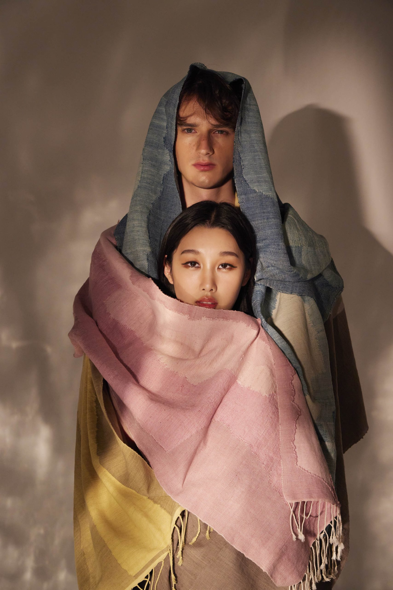
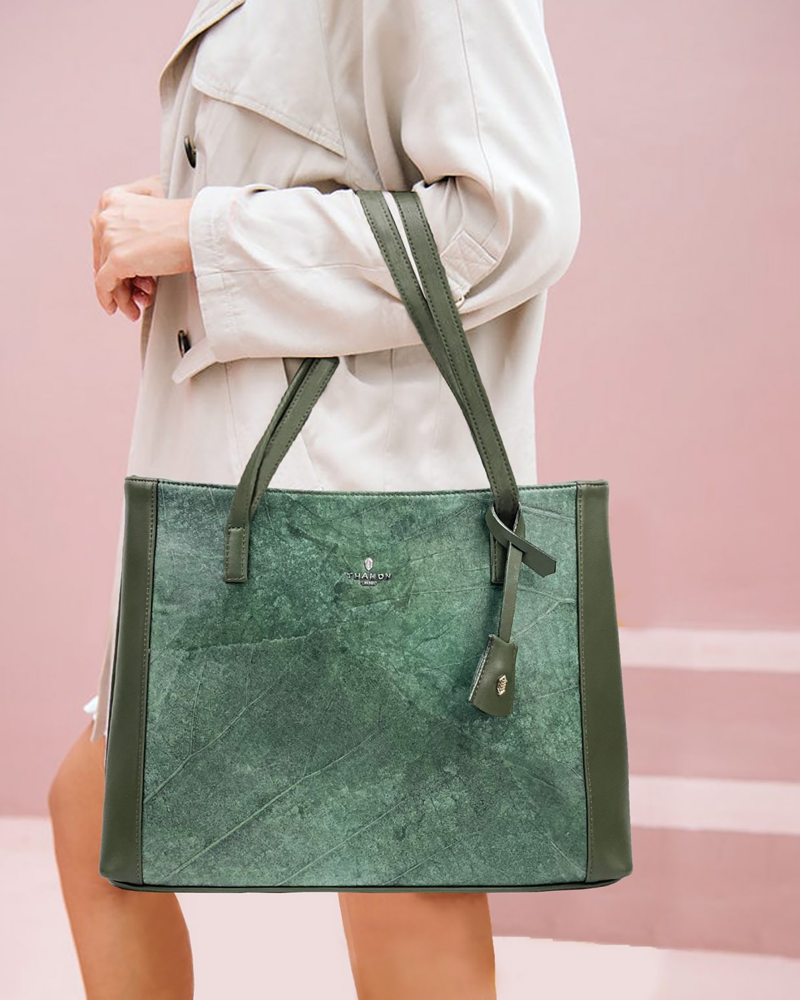
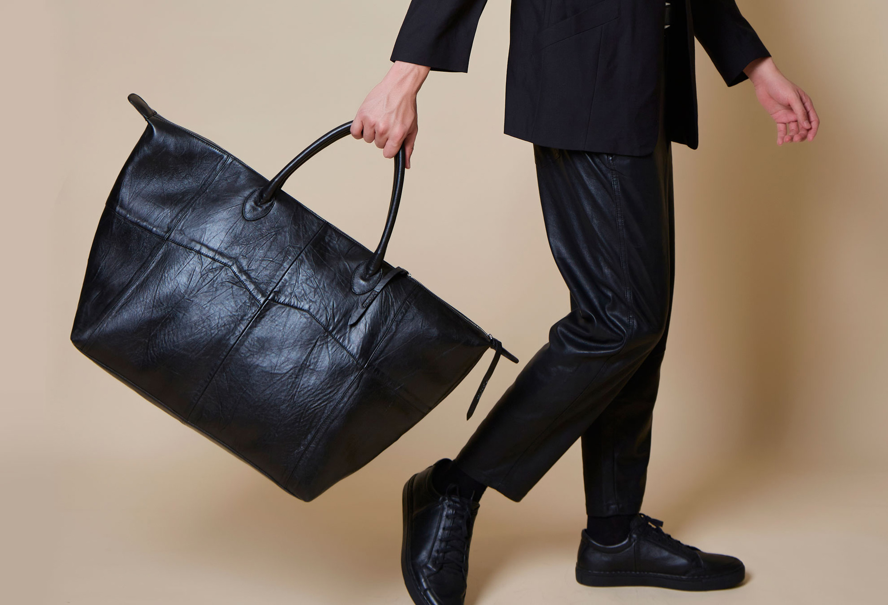
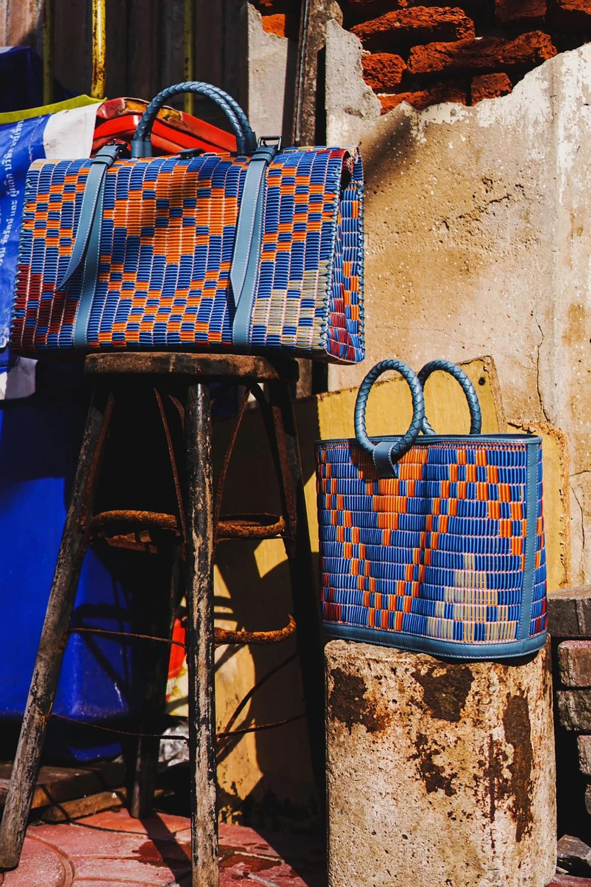

THÁI LAN ĐANG THÚC ĐẨY PHÁT TRIỂN THỜI TRANG BỀN VỮNG NHƯ THẾ NÀO?
Bền vững không còn là xu hướng của ngành thời trang nói riêng tại Thái Lan mà đang trở thành một sứ mệnh mang tầm vĩ mô khi chính phủ nước này thể hiện sự quan tâm một cách chiến lược và thiết thực.
LÀM MỚI CHẤT LIỆU TRUYỀN THỐNG
Là một trong những quốc gia phát triển nhất Đông Nam Á, Thái Lan có GDP đứng thứ hai khu vực. Thái Lan cũng là quốc gia có lượng rác thải nhựa ở biển đứng thứ 10 thế giới (theo số liệu năm 2020 từ Viện Nghiên cứu Phát triển Thái Lan). Từ sau đại dịch COVID-19, chính phủ Thái Lan đã bắt đầu đưa ra nhiều chính sách và kế hoạch nhằm giảm thiểu tác hại lên môi trường và đưa tính bền vững vào cuộc sống của người dân một cách toàn diện và thực tiễn. Trong đó, ngành thời trang đã có nhiều chuyển biến tích cực để bắt kịp xu hướng.
Tính bền vững được đánh giá dựa trên các tác động tích cực đối với môi trường, con người trong cộng đồng và xã hội. Ngoài các phương thức tái chế và sáng tạo nhằm tiết kiệm tài nguyên, giải quyết rác thải và tạo ra nguồn nguyên vật liệu mới thay thế, hạn chế vận chuyển cũng là cách để giảm tác hại của dấu chân carbon, đồng thời thúc đẩy kinh tế địa phương thông qua việc tạo thêm công ăn việc làm ổn định cho người bản địa.

Trong thời trang, Thái Lan được biết đến với nguồn nguyên vật liệu tự nhiên phong phú với các loại sợi được dệt từ tre, lanh, gòn kapok và tơ tằm. Tuy nhiên, vải vóc được dệt từ sợi tự nhiên, nhất là lụa thổ cẩm thường gắn liền với hình tượng truyền thống kén người tiêu dùng, đôi khi không đủ hấp dẫn thế hệ trẻ. Để chất liệu bền vững này được ưa chuộng hơn, trong những năm gần đây, nhiều thương hiệu đã sử dụng vải truyền thống trong các BST có thiết kế hiện đại, mang tính ứng dụng cao.
Ngoài kỹ thuật dệt vải, nguyên vật liệu tự nhiên còn được sử dụng cho công nghệ chế tạo da thuần chay. Bằng những loài thực vật dễ tìm trong tự nhiên, nhiều nhà sản xuất đã thử nghiệm với các chất liệu da nhân tạo mới có độ bền cao và có thể phân hủy mà không gây tổn hại đến môi trường. Có thể kể đến các thương hiệu túi xách KEAPAZ hay Thamon và Mr Leaf với da làm từ các loại lá cây.

Tái chế là giải pháp hiệu quả để giải quyết vấn nạn rác thải, được áp dụng nhiều vào khâu sản xuất chất liệu. Tại Thái Lan có hơn 3.600 xưởng đồ da, thải ra khoảng 5.400 tấn da mỗi năm. Những thương hiệu như Thais và The ReMaker đã thu thập những mẩu da vụn không còn khả năng sử dụng và trang phục bằng da cũ để chế tạo ra chất liệu da thân thiện với môi trường (không hóa chất, giảm thiểu năng lượng sản xuất và lượng carbon sản sinh), phục vụ cho không chỉ ngành thời trang mà còn trong chế tác đồ nội thất, đồ gia dụng…
GIÁ TRỊ CỦA VĂN HÓA BẢN ĐỊA THÁI LAN
Đề cao tính bản địa cũng là một điểm sáng trong hành trình bền vững hóa của Thái Lan. Những làng nghề thủ công với sự trợ giúp của những NTK, thương hiệu trong nước đã có thể tạo ra những sản phẩm thời thượng và sáng tạo hơn.
Đan chiếu là một trong những nghề thủ công truyền thống đặc trưng của Thái Lan. Thương hiệu Ethnicabaca đã sử dụng những tấm chiếu dệt bằng sợi cói để tạo nên những chiếc túi thời trang họa tiết thổ cẩm bắt mắt. Mặc dù không tập trung mạnh vào lĩnh vực thời trang nhưng thương hiệu chiếu Mat-er cũng đã có những thay đổi cấp tiến để mang lại diện mạo mới cho những sản phẩm mang tính truyền thống. Những tấm chiếu được dệt bằng sợi nhựa tái chế với họa tiết và hình dáng đa dạng, góp phần đưa đồ dùng truyền thống quen thuộc trở nên thú vị hơn trong đời sống hiện đại.


Với đặc trưng của các kỹ thuật thủ công cùng phong cách riêng biệt của những NTK, tính bản địa Thái đã lay động đến những thương hiệu quốc tế. Những ông lớn của làng thời trang thế giới đã bắt tay với những NTK Thái Lan để mang đến trải nghiệm mua sắm vừa phản ánh được cốt lõi thương hiệu, vừa mang bản sắc quốc gia sở tại. NTK Korakot Aromdee được biết đến với những thiết kế trang trí nội thất độc đáo, lấy cảm hứng từ ngư cụ tại quê hương mình, sử dụng vật liệu tự nhiên nội địa bằng phương pháp truyền thống bởi những nghệ nhân địa phương. Sáng tạo của anh được Louis Vuitton tin tưởng lựa chọn đến hai lần cho không gian bán lẻ của thương hiệu.
Bên cạnh những nỗ lực cá nhân của từng thương hiệu, chính phủ cũng tạo điều kiện để thúc đẩy toàn diện trong công tác quảng bá, thúc đẩy thương mại và tuyên truyền thông điệp về xu hướng bền vững. Hội chợ thương mại quốc tế STYLE Bangkok diễn ra vào tháng 3 vừa qua được đồng tổ chức bởi Cục Xúc tiến Thương mại Quốc tế DITP và Hội đồng Quản trị Thương mại Thái Lan có chủ đề ChicNature, mang thông điệp về lối sống sành điệu và bền vững, tập hợp đa lĩnh vực, giới thiệu các doanh nghiệp vừa và nhỏ tại sân chơi mang tầm quốc tế.
Với sự cộng hưởng từ các doanh nghiệp và chính phủ cùng sự đón nhận của thế hệ tiêu dùng trẻ, xu hướng bền vững được kỳ vọng sẽ có tác động chân thực và hiệu quả vào cuộc sống của công dân, giúp tạo ra những thay đổi đáng kể với môi trường và xã hội Thái Lan trong những năm kế tiếp.